🤖
生活中的AI
和二年级小朋友一起，寻找藏在我们身边的AI朋友
分享人：郭仕万爸爸 ｜ 二(3)班 ｜ 2026年9月24日
AI科普小课堂 · 40分钟 · 二年级
AI寻宝之旅，出发！🗺️
🙋 先来想一想：你在生活中，哪些地方已经见过AI了？
🔍
第一站：AI在哪里？
找出身边的AI小超人
🙅
第二站：AI不会做什么？
AI也会闹笑话哦
🧠
第三站：AI怎么变聪明？
偷偷看一眼AI的大脑
🏆
宝藏：未来的机器人
下一个十年，等你来创造
第一站
AI在哪里？🔍
找一找藏在手机、家里和马路上的四位AI小超人
📱 😊 🗣️ 🤖 ❤️
🤔 这是什么呢？
先想一想、猜一猜 —— 再点一下屏幕，看看AI的回答
拍一拍，就知道！📷🌸
🔍 这是：蒲公英！
📸 拍一下就知道
拍照识图
- 公园里看到不认识的小花？拍一下，AI马上告诉你名字
- 还能拍照翻译英文路牌，出国旅游不迷路
- 小狗是什么品种？鸟儿叫什么名字？拍一拍就知道
💡 AI看过几百万张照片，才练出这双“火眼金睛”
🤖 AI的答案是什么呢？
👉 再点一下屏幕看看
👉 再点一下屏幕看看
看一眼，就开门！😊🔓
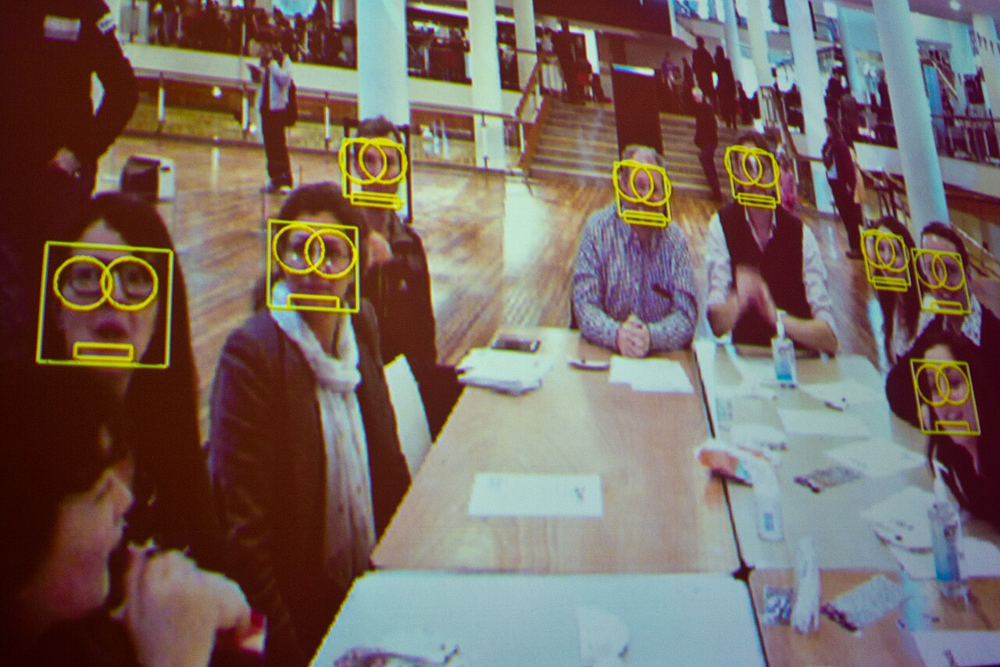
人脸解锁
- AI在你脸上找“密码”：眼睛隔多远、鼻子有多高、脸蛋什么形状
- 人再多，它也能把一张张脸都找出来（看左图的小方框）
- 超市刷脸付款、小区刷脸开门，都是它在工作
🤫 小秘密：长得超像的双胞胎，有时候能骗过它！
🤔 手机怎么认出是你的？
👉 再点一下屏幕看看
👉 再点一下屏幕看看
“前方学校，请慢一点～” 🚗🗣️
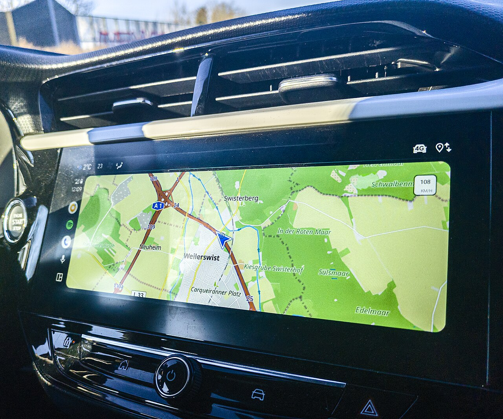
🗣️ 前方学校，请慢一点～
AI导航播报
- 导航里的声音，不是真人躲在手机里说话
- 是AI合成的声音：把文字变成好听的人声
- 它还能变成孙悟空、蜡笔小新的声音给你带路！
🧭 它还会看路况：哪里堵车，就帮你换一条路
“小爱同学，明天会下雨吗？” 🎙️🤖
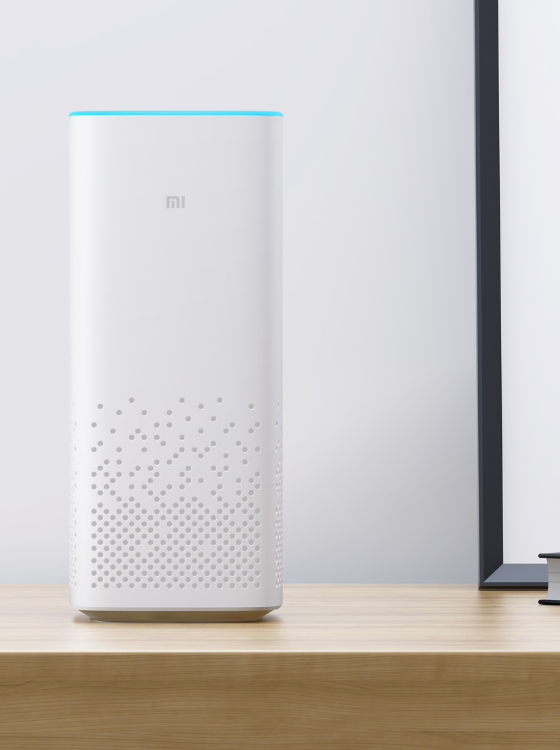
会聊天的AI
- 👂 第一步：听清——把你说的话变成文字
- 🧠 第二步：想明白——它“读过”超级多的书，知道怎么回答
- 🗣️ 第三步：说出来——用好听的声音回答你
💬 DeepSeek、豆包、Kimi、ChatGPT，都是会聊天的AI
🎙️ 它是怎么做到的？
👉 再点一下屏幕看看
👉 再点一下屏幕看看
会下棋的机器人——元萝卜 🤖♟️
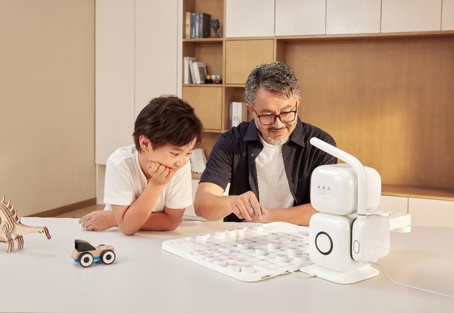
AI下棋高手
- 👁️ 它有眼睛：看清棋盘上的每个棋子
- 🧠 它有AI大脑：飞快地想办法
- 🦾 它有小手臂：自己拿棋、摆棋
- 象棋、围棋都会下，还能当你的小老师！
🏆 AI还赢过下棋的世界冠军！先保密，第三站讲～
♟️ 它为什么这么厉害？
👉 再点一下屏幕看看
👉 再点一下屏幕看看
它怎么知道我喜欢恐龙？📱❤️
🦕
👍➡️🤖➡️📺
个性化推荐
- 你点的每个赞、看的每个视频，AI都悄悄记在小本本上
- 然后它猜：“这个小朋友喜欢恐龙，再推一个恐龙视频！”
- 购物网站的广告，也是这样找到你的
⏰ 小提醒：视频再好看也要控制时间，保护好眼睛！
🦕 AI是怎么猜到的？
👉 再点一下屏幕看看
👉 再点一下屏幕看看
哪些是AI，哪些不是？
💡
电灯
是AI吗？点我揭晓
❌ 不是AI
你按开关它就亮，只会听话，不会自己学习📺
电视遥控器
是AI吗？点我揭晓
❌ 不是AI
它只是个“传话筒”，把按键消息传给电视😊
刷脸开门
是AI吗？点我揭晓
✅ 是AI！
它会“看”：认出你的脸才开门🧹
扫地机器人
是AI吗？点我揭晓
✅ 是AI！
它会自己认路、躲开桌腿和沙发🧮
计算器
是AI吗？点我揭晓
❌ 不是AI
算数超快，但算得快≠聪明，它不会学习新本领🗣️
智能音箱
是AI吗？点我揭晓
✅ 是AI！
它会听、会想、会说，还会越用越聪明💡 小秘密：会不会自己学习，是判断AI的关键！
第二站
AI不是万能的 🙅
AI也会闹笑话，也有做不到的事
🐱 ❓ 🎨 🧠
狗狗？还是松饼？🐕🧁
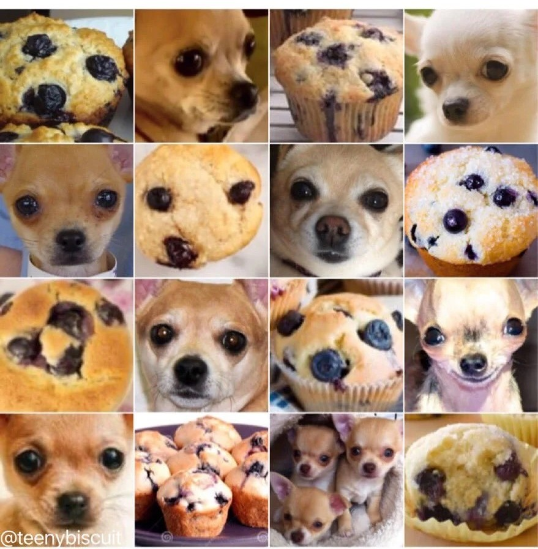
图里混着狗狗和松饼——
你要看半天，AI也会看花眼！
你要看半天，AI也会看花眼！
犯糊涂的AI
- 狗狗和松饼长得太像，AI分不清谁是谁！
- 它还把橘猫的背影认成过面包！
- 因为AI只是照着照片“对样子”，没有像人一样真正看懂
👀 所以，AI的答案要打个问号，不能全信哦
🐕 你找到了几只狗狗？
👉 再点一下，看AI闹笑话
👉 再点一下，看AI闹笑话
一本正经地“胡说八道” 🙊
问AI：《静夜思》是谁写的？
床前明月光，疑是地上霜。
举头望明月，低头思故乡。
🤖 AI：是杜甫写的！
🙋 它说得对不对？那是谁写的？
✅ 正确答案：李白！
AI答错了 ❌ —— 全班都答对啦！
AI的“白日梦”
- 答错了还不算，它还会编出一大堆理由，听起来可自信了
- 说得越自信，越要小心——科学家叫它“AI幻觉”
- 它不是故意骗人，它只是没有真正学会
🔍 记住：AI说的话，要请大人或书本帮忙检查！
📜 AI说得对不对？是谁写的？
👉 再点一下屏幕揭晓
👉 再点一下屏幕揭晓
新点子，只有你有！🎨✨
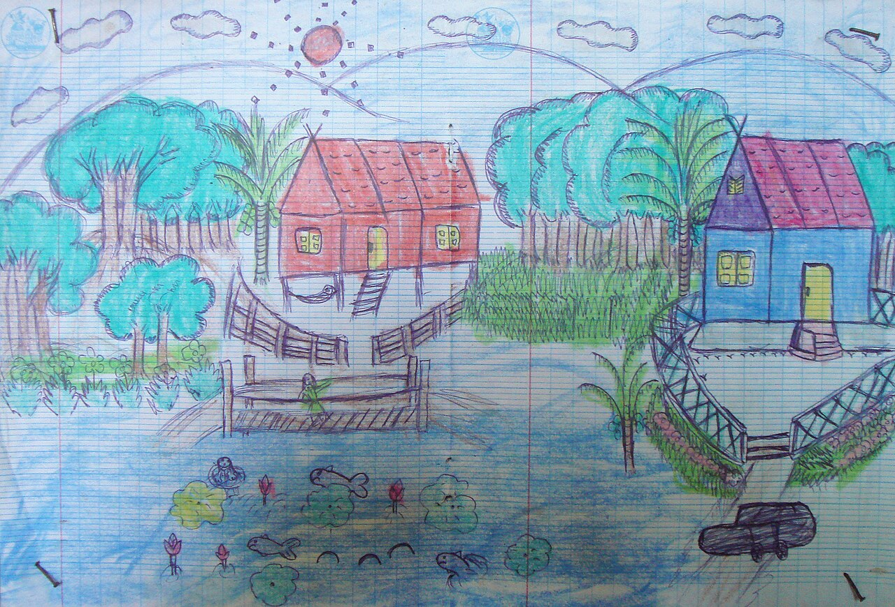
这是一位小朋友画的村庄——
这么可爱的画，AI可想不出来！
这么可爱的画，AI可想不出来！
AI会模仿，不会“第一个想到”
- AI画画，是学了几百万张别人的画拼出来的
- 它不会第一个想到“会飞的草莓房子”——你会！
- 想象力和创造力，是人类的超能力
🙋 说一说：你想象过什么奇怪的东西？AI肯定没见过！
作业要自己写，朋友要真心交 ✍️❤️
🧠
🏋️ 💪 🏃
大脑健身房
天天练习，越练越聪明；
总让AI代劳，它就“变懒”啦！
总让AI代劳，它就“变懒”啦！
AI是工具，不是替身
- AI像自行车：帮你更快，但路要自己走
- 用AI抄作业 ＝ 骗自己的大脑，大脑会“变懒”！
- 安慰朋友、照顾家人——只有真心的你能做好
🌟 记住：让AI帮你学，不是替你学
🧠 大脑不练会怎样？
👉 再点一下屏幕看看
👉 再点一下屏幕看看
这些事，找AI帮忙好吗？
📚
查资料：恐龙吃什么
找AI帮忙？点我揭晓
✅ 好帮手！
查得快，但答案要再核对一下📝
写作文
找AI帮忙？点我揭晓
❌ 自己写！
可以请AI给点子，但字要自己写才进步🎁
给妈妈挑生日礼物
找AI帮忙？点我揭晓
🤝 一起想
AI出主意，你来做决定，心意最重要😢
安慰难过的同学
找AI帮忙？点我揭晓
❌ 人来！
一个真心的抱抱，AI给不了🧮
检查口算作业
找AI帮忙？点我揭晓
✅ 好帮手！
检查错题很在行，但做题要靠你自己🍽️
决定今晚吃什么
找AI帮忙？点我揭晓
🤝 参考一下
AI建议菜单，全家一起投票决定💡 口诀：AI辅助可以，AI代替不行！
第三站
AI怎么变聪明的？🧠
偷偷看一眼AI的“大脑”
🧠 ⚡ 🐱 📖
AI在模仿你的大脑！🧠⚡
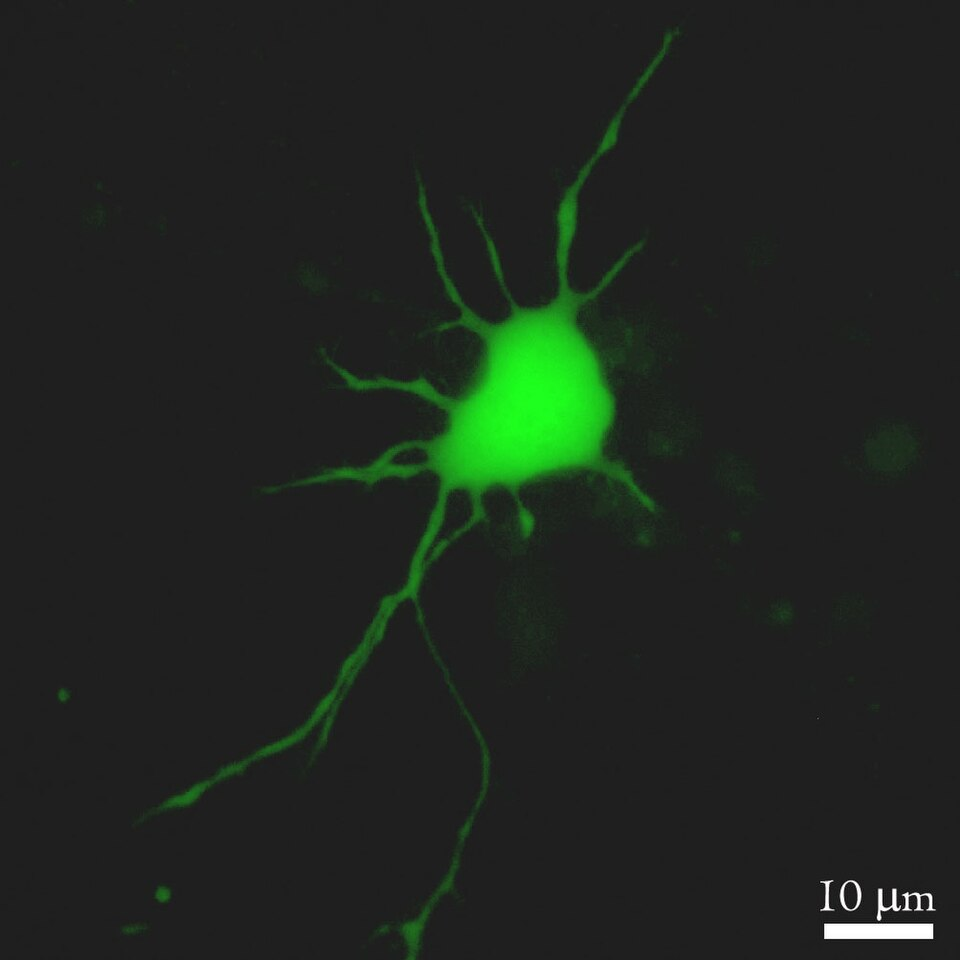
🧠 你的大脑：一千亿个“小开关”
⬇️ 科学家模仿它！
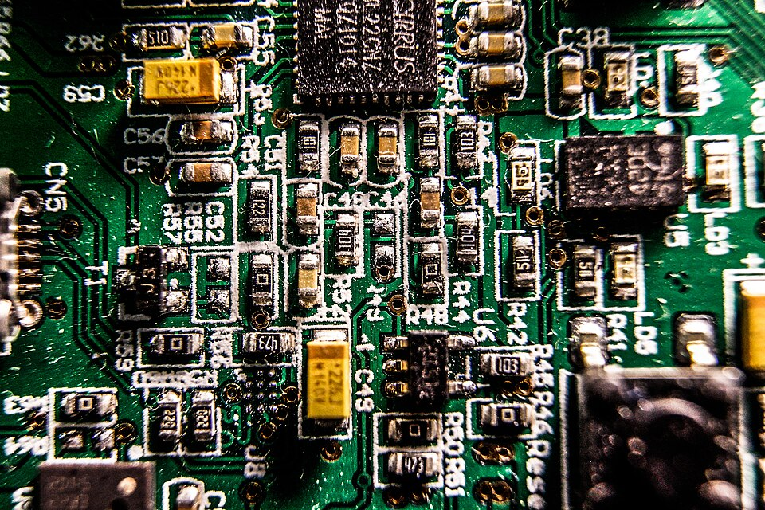
💻 AI的大脑：“电子小开关”
电子小开关
- 你的脑袋里有一千亿个“小开关”（神经元），互相传消息
- 科学家用电脑造了好多“电子小开关”，连成一张大网
- 这张网叫“神经网络”——AI的大脑就是它
🐟 像一张会思考的渔网：消息钻来钻去，答案就出来啦
AI学习，跟你一样！🐱📚
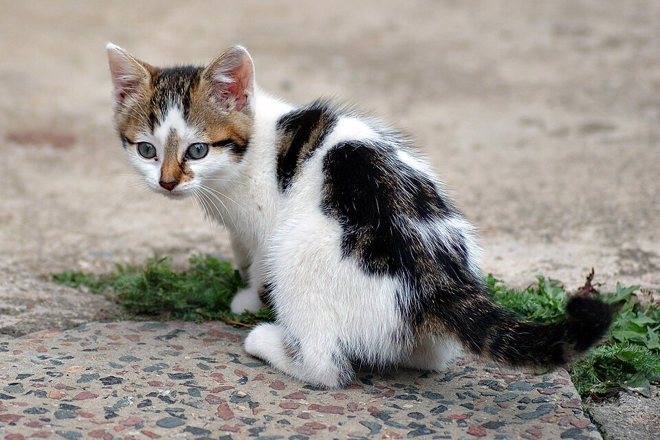
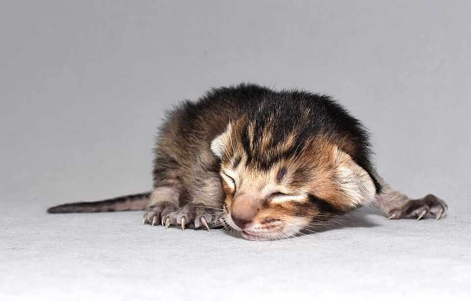
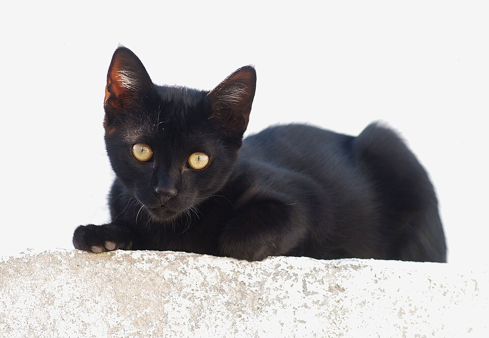
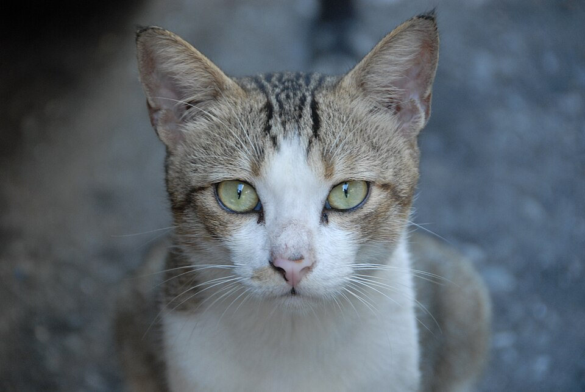
🙋 考一考：给只学过猫的AI看一张老虎照片，它会猜成什么？
以“学认猫”为例
- 📸 第1步：看！给AI看一万张猫咪照片
- ✏️ 第2步：猜！“这是猫吗？”猜错就纠正
- 🚀 第3步：练！练一万遍，越练越准
🚲 就像你学骑车：摔倒了，爬起来，再练一次！
从蒸汽机到AI，一站接一站 🚀
🚂
200多年前
蒸汽机干力气活
蒸汽机干力气活
→
💡
100多年前
电灯·电话·汽车
电灯·电话·汽车
→
💻
30多年前
互联网连成网
互联网连成网
→
🤖
现在
AI自己“学习”
AI自己“学习”
→
🦾
下一个十年
AI住进机器人？
AI住进机器人？
⬇ AI的五个大日子 📅
🐣
1956
AI出生啦！
科学家给它取名
“人工智能”
♟️
1997

“深蓝”赢了
国际象棋
世界冠军
⚫
2016
AlphaGo 4:1
赢了围棋冠军
李世石
💬
2022
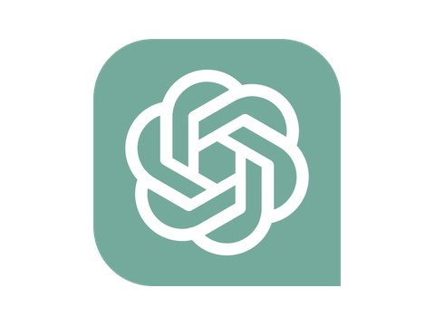
ChatGPT来了
人人都会
和AI聊天
🇨🇳
2025
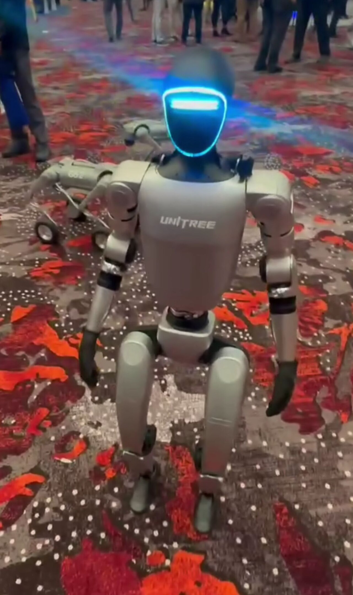
宇树机器人
上春晚扭秧歌
DeepSeek惊艳世界
快问快答：谁是AI小博士？
🧠
AI的“大脑”叫什么？
A. 超级电池 🔋
B. 魔法水晶球 🔮
C. 神经网络 🕸️
举手投票后点我揭晓
✅ C. 神经网络
像一张会思考的渔网，消息钻来钻去，答案就出来啦🐱
AI认猫，要看多少张照片？
A. 成千上万张 📚
B. 3张就够啦 ✌️
C. 一张都不用 ☝️
举手投票后点我揭晓
✅ A. 成千上万张
看得越多，猜得越准——多练习才聪明！🏆
谁赢了围棋世界冠军？
A. 深蓝 ♟️
B. AlphaGo 🤖
C. 奥特曼 🦸
举手投票后点我揭晓
✅ B. AlphaGo
2016年4:1赢了李世石；深蓝赢的是国际象棋，别搞混啦！💡 三题都选对？全班一起当「AI小博士」！👏
看！机器人也会中国功夫
2026年央视春晚《武BOT》· 宇树官方回顾：G1集群武术+H2首秀（全长1分41秒）· 来源：宇树官方 / 哔哩哔哩 BV1UbZMBmE4p
未来的AI，会帮我们做什么？🔮
🏥
AI医生
帮医生看片子，早早发现病菌
👩🏫
AI老师
给每个小朋友讲“专属故事”
🚗
无人驾驶
汽车自己认路，送你上学
🚒
AI救援员
火灾地震时，冲进危险地方救人
🗳️ 举手投票：你最想要哪个AI朋友？看看谁是“人气王”！
看！机器人已经会做家务了 🏠
Figure AI机器人走进30个陌生家庭：铺床、叠毛巾、打扫客厅 · 视频时长24秒
如果你有一个机器人朋友……
🤖💭
你最想让它做什么？
说一说为什么～
🙅✋
哪些事，不希望它替你做？
哪些事必须自己来？
💝🌟
AI做不了的事，
是不是最重要的事？
是不是最重要的事？
爱、友谊、想象力……
今天带回家的三个小秘密 🌟
1
👀 👂 🎮 ❤️
AI就在身边
会看 · 会听 · 会玩 · 会猜
2
🙅 🔍 🧠
AI不是万能的
会犯错 · 要检查 ·
不能替你思考
不能替你思考
3
📚 🚀 🌟
AI靠学习变聪明
未来的AI，
等你们来创造！
等你们来创造！
👋
谢谢大家！
分享人：郭仕万爸爸 · 提问时间到，开动你们的小脑筋吧～
✨ 小彩蛋：这份PPT课件，也是AI帮忙一起做的哦！
1 / 28
← → 或 点空白处翻页（部分页先出左图、再点一次出右图）· 点卡片揭晓答案 · N 讲稿备注 · F 全屏